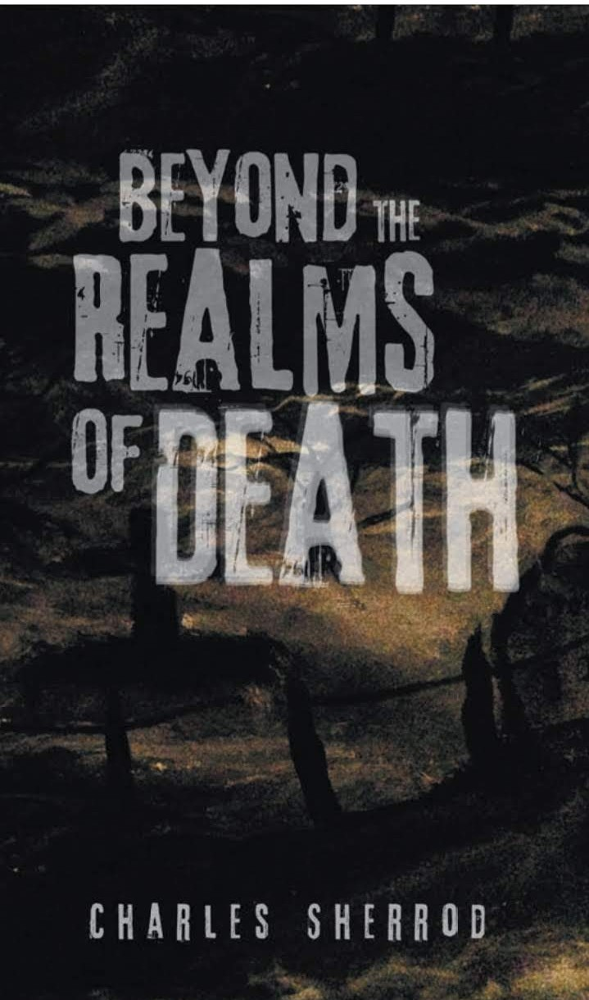

A Psychological Horror & Supernatural Thriller
Chris's reality fractures when he loses his beloved Sarah. Terrifying visions invade his waking mind as he develops volatile, unexplainable extrasensory abilities. A cold, dark dimension rips straight through the fabric of reality, unleashing restless spirits and a trail of brutal murders.
When homicide detectives uncover a disturbing video of a botched seance, the traditional investigation collapses, forcing the lead detective to employ real paranormal investigators. Joining forces with Chris and his friend Becky, these experts realize a malevolent force beyond the veil targets Chris. To uncover the grim truth behind Sarah’s disappearance, they must survive a chilling descent, and battle an evil entity in a desperate exorcism before the darkness claims his soul.
AVAILABLE NOW
The wind off of the stormy seas Whispers pain through the trees The rain before it hits the ground Whispers pain without a sound The mourning song of the birds Whispers pain without words Flitting wings, the butterfly Whispers pain to the sky A rolling wave onto the land Whispers pain into the sand The wind off of the peaceful seas Whispers love through the breeze The rain before it hits the ground Whispers love without a sound A morning song without words Whispers love from the birds As beautiful as the butterfly Whispers love to the sky The endless wave onto the sands Whispers love into my hands
Voices echoing in the deep darkness, Shadows stretching across empty spaces. Memories fading like thunder in the distance, Erasing paths to forgotten places. A chilling wind breathes through the quiet hallway, Where dust settles on the frames of what used to be. The clock stands frozen at the edge of yesterday, Ticking away the visions I can no longer see. I reach into the fog for a familiar hand, But touch only the cold, unyielding night. The heavy silence swallows all of my questions, As old illusions slowly drift from sight. Yet in the quiet void, a spark remains unseen, Buried beneath the weight of a heart of stone. A lingering echo of the life I left behind, Waiting in the dark for a light to guide me home.
Alone I walk upon this beach The other side, I hope to reach Before the dawn I sailed away With hopes of finding love someday Clouds of doubt rain overhead Tears of pain reign in my head Through the storms I hold the oars By breaking waves and rocky shores Like eyes that shine into the night A lighthouse spins its warning light "Stay away! Your boat, your heart No love here, don't even start." though I sail this lonely ocean Full of fear and raw emotion In my craft named 'wishful thinking.' Like the sun, I think I'm sinking. Will I find those loving hands That live upon those golden sands? Or could this be a quest forlorn In search of one who wasn't born?"